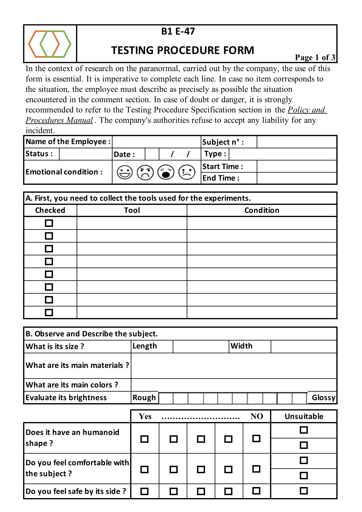
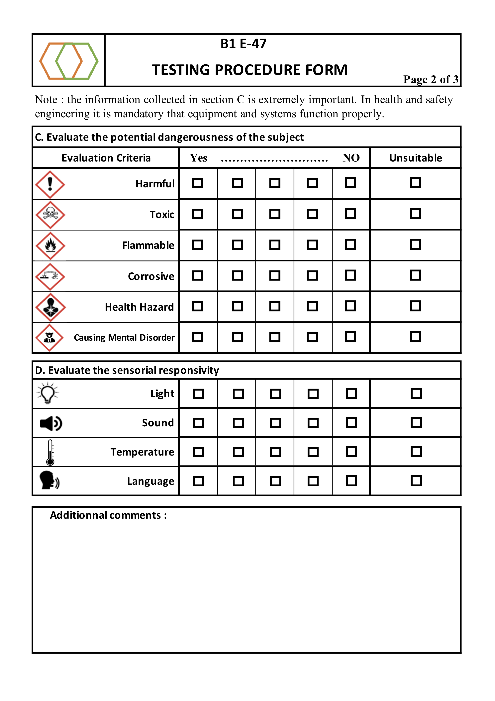
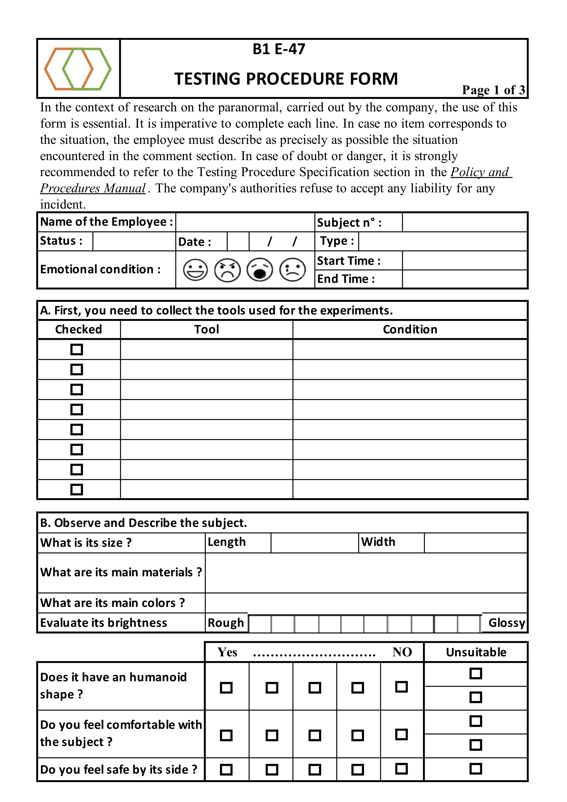
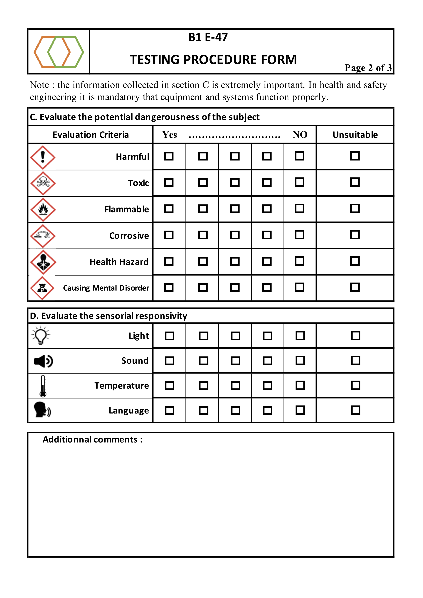

Projet ARM
Inscription ARM
Dans le cas peu probable où vous arrivez sur cette page et qu'un emploi au sein de la ARM vous intéresse, veuillez suivre ce lien qui vous redirigera vers notre page d'inscription.

Qu'est ce que la ARM
La ARM est une agence gouvernementale d'analyse et d'élaboration de procédure de confinement pour les objets anormaux. Elle s'occupe d'expérimenter, analyser et proposer des solutions de neutralisation d'objets dangereux (classés anormaux).
La ARM se spécialise dans les entités ésoteriques. Elle reçoit des objets de classe 1 (statiques) provenant d'autres entreprises. Ces objets sont ensuite classifiés puis stockés avant d'être testés. Les tests peuvent être très différents mais ils suivent tous un protocole qui leur sont propre.
 



Synopsis
Il s'agit d'un jeu d'horreur dans lequel le joueur incarne Franck, un employé de bureau modèle de la ARM. Lors de ses heures supplémentaires, rien ne se passera comme prévu pour Franck.
Le jeu est un FPS qui se déroule la nuit dans les sous-sols de la ARM. L'environnement est étroit, étouffant et mal éclairé. Le joueur devra tester un objet en suivant le protocole qui lui est fourni.
Intentions
Nous avons pour intention d'inclure le joueur dans une expérience fidèle et saisissante. Nous proposons un environnement détaillé, clos et maîtrisé par le joueur. Il prend rapidement confiance en lui et apprivoise son espace de travail. Toutefois, le joueur se rendra compte très vite qu'il n'est pas tout à fait seul.
Nous ne cherchons pas l'horreur directe à base de monstre, de sang et de trippes, mais nous décrivons une ambiance étouffante et anxiogène afin que la peur provienne du joueur lui même. Nous jouons sur ce que le joueur ne voit pas.
Trailer
Voici un aperçu vidéo de la première version du projet.
A propos
Le jeu ARM a été développé en printemps 2020. Il est programmé avec le moteur Unity 3D en C#. Les modèles 3D sont créés sur Blender et texturés avec la suite Substance. Aujourd'hui, une refonte complète du projet est envisagée afin d'en améliorer tous les aspects.